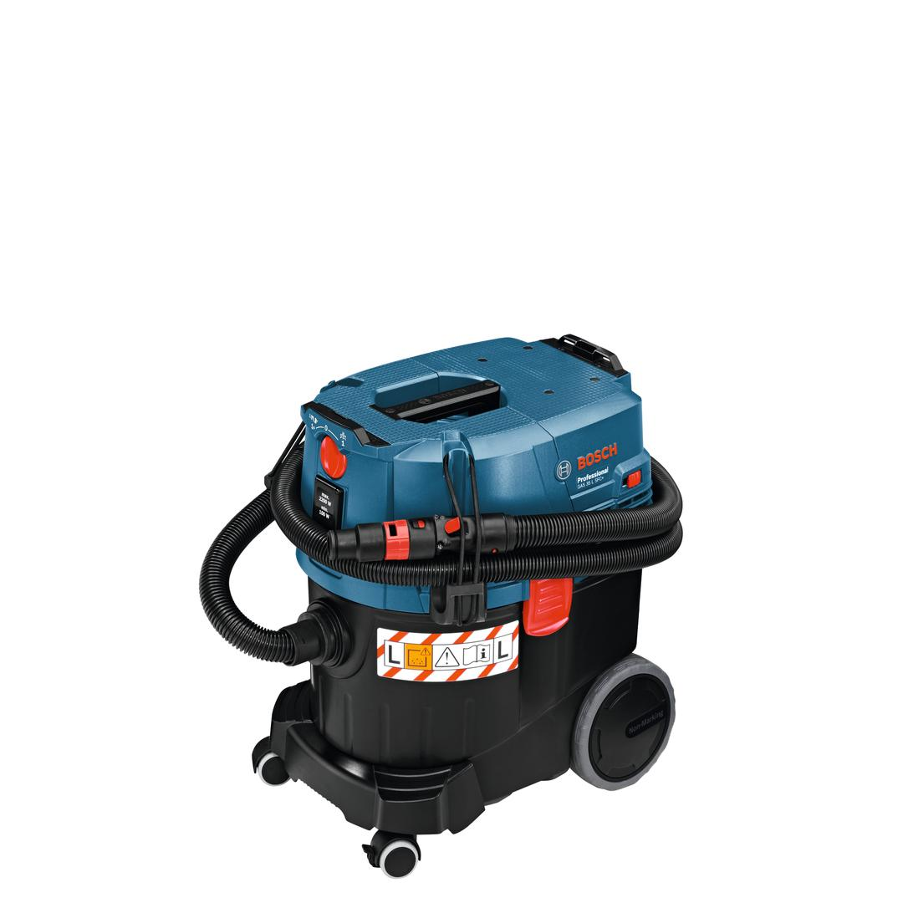
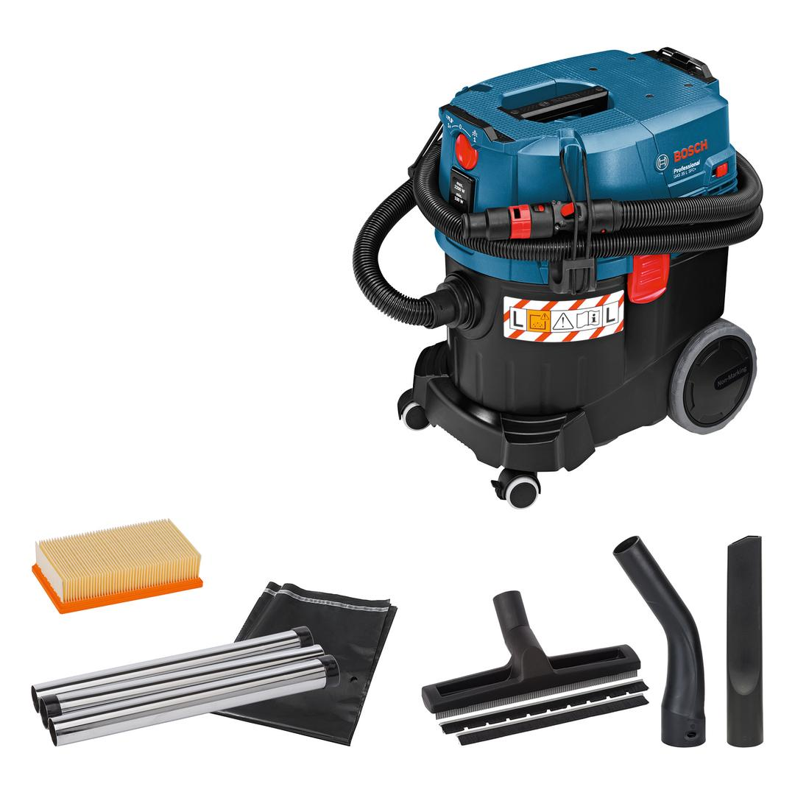

06019C3000




| Rated input power |
1,200 W |
| Weight |
11.600 kg |
| Container volume, gross |
35.00 l |
| Container volume, net |
23.0 l |
| Container volume, net, water |
19.2 l |
| Dust class of wet/dry extractor |
L |
| Dust class |
L |
| Tool dimensions (width) |
375 mm |
| Tool dimensions (length) |
515 mm |
| Tool dimensions (height) |
575 mm |
| Filter surface area |
6,150 cm² |
| Airflow rate (turbine) |
74 l/s |
| Vacuum pressure (turbine) |
254 mbar |
| Voltage, electrical |
230 V |
| Plug Type |
Type F |
| Filter cleaning system |
SFC |
| Anti-static hose |
No |
| Line input power turbine, max |
1380 W |
L-Class dust extractor for wet/dry applications with semi-automatic filter cleaning
The GAS 35 L SFC+ Professional is Bosch's corded, L-class wet and dry dust extractor with a convenient semi-automatic filter cleaning (SFC+) system. This system enables quick and easy onehanded filter cleaning for faster, uninterrupted work progress. It has an L-class dust extractor certification in accordance to EU standards, ensuring good user protection. It also features an extremely powerful 1,380 W suction turbine, providing 254 mbars of very high vacuum pressure for the best extraction results. This dust extractor is intended for wet and dry vacuuming. It is compatible with the Bosch Click & Clean System.
An L-BOXX can be conveniently clicked onto the GAS 35 L SFC+ Professional to provide a practical transport solution for improved mobility.